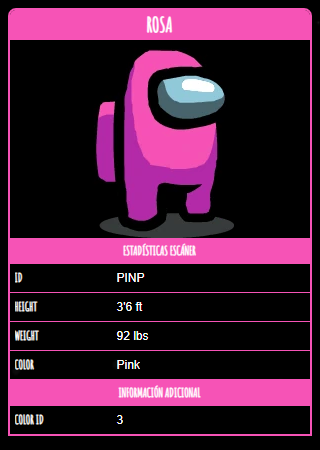

Rosa

Rosa
es uno de los colores de Among Us que los jugadores pueden personalizar.
Curiosidades
- Rosa no se usó mucho en fotos promocionales, pero todavía se usa, un ejemplo es cuando Rosa es asesinada por Verde.
- En la sección "Cómo jugar" se muestra a Rosa usando lo que probablemente sea una tablet Microsoft Surface.